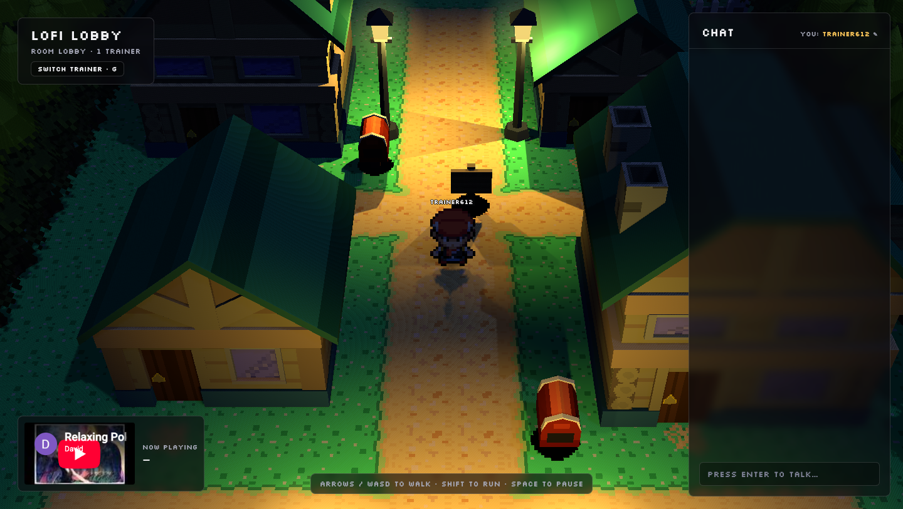

Lofi Lobby
A 2.5D town at night where everyone walks,
chats and hears the same song at the same second.
Workers
Durable Objects
WebSockets
three.js
YouTube IFrame API

now playing for everyone · synced by the server
A project by
Yudi Ganeko
· software engineer, code and dev careers
120K
subscribers on YouTube